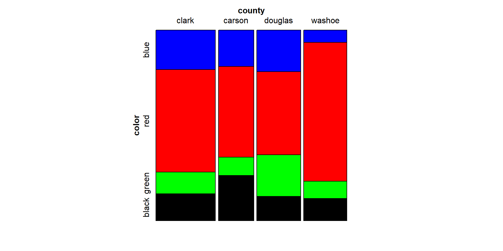

Common examples include Likert Scale (Strongly Disagree, Disagree, Neutral, Agree, Strongly Agree) responses and parts of a whole (None, Some, All).
Note
We would need more than two columns in our contingency table to account for these other outcomes. Variables can be forced to be “binary”, but some important information can be lost.
Multiple Groups
It is also common to compare responses from multiple groups such as Race, Income Status, and Exposure levels. Dichotomizing these variables to fit into a 2x2 will also result in loss of information.
Associations in \(s \times r\) tables
\(s \times r\) tables
We now evolve the contingency table from a \(2 \times 2 \to s \times r\), where \(s\) is the number of rows and \(r\) is the number of columns. Both \(s\) and \(r\) are expected to be at least 2.
General Association Statistic
When the groups and the response variable categories can be nominally scaled, we can only test for general association.
Statistical Hypotheses
\(H_0\): there is no general association between the groups and response variables.
\(H_A\): there is a general association between the two variables
General Association Statistic
The randomization statistic based on Mantel-Haenszel statistics can be calculated from the Pearson chi-square statistic, \(Q_P\).
When \(n\) is large, \(Q \approx Q_P\). Like the Pearson chi-square, \(Q\) follows a chi-square distribution with \((s-1)(r-1)\) degrees of freedom.
Mosaic Plot
A mosaic plot visualizes the proportion in each cell of the contingency table.
Note
The horizontal space is divided by sizes corresponding to the relative count of x-axis variable levels, while the vertical space is divided up according to relative sizes of the y-axis variable levels.
Mosaic Plot in R
The mosaic() function in the vcd package creates a mosaic plot for data frames/contingency tables. Shown below is the mosaic plot for the UCBAdmissions data set, which shows the aggregate data on applicants to graduate school at UC Berkeley in 1973.
The highlighting option provides mosaic information about which variables need to be shaded. The highlighting_fill provides the colors you want to use the highlight these variables.
General Association: SAS
In SAS, the Pearson chi-square statistic \(Q_P\) is the value referred to as ‘Chi-square”
Note that \(Q\) is NOT the Mantel-Haenszel statistic in the chisq output in SAS.
\(Q\) is the “General Association” cell in the cmh output.
We can use the plots option in the tables statement to create a mosaic plot.
cmh calculates the general association Cochran-Mantel-Haenszel statistic. plots=mosaicplot tells SAS to create a mosaic plot with \(a\) and \(b\).
General Association: R
The CMHtest() function provides the general association Cochram-Mantel-Haenszel statistic.
CMHtest(contingencytable)
Example
The table contains data from a study concerning the distribution of party affiliation in a city suburb. The interest was whether there was an association between registered political party and neighborhood.
dat <-expand.grid(Party=c("Democrat","Independent","Republican"),Neighborhood =c("Bayside","Highland","Longview","Sheffield"))dat$count <-c(221,200,208,160,291,106,360,160,316,140,311,97)
Randomization Statistic (use general association):
CMHtest(dat_cc)
Cochran-Mantel-Haenszel Statistics for Party by Neighborhood
AltHypothesis Chisq Df Prob
cor Nonzero correlation 0.81238 1 3.6742e-01
rmeans Row mean scores differ 13.89377 2 9.6163e-04
cmeans Col mean scores differ 3.15865 3 3.6781e-01
general General association 273.81223 6 3.3158e-56
\(Q_P\) = 273.92, \(Q\) = 273.81. The corresponding p-value \(p<0.001\) suggests there is an association between party affiliation and neighborhood.
Note
In SAS, note that the Mantel-Haenszel statistic reported in the chisq output corresponds to the correlation statistic which doesn’t make sense in this case (discussed later).
Exercise
Secondary school teachers were randomly sampled from four school districts in Nevada and asked what marker color they used in grading students’ work.
What is the Pearson chi-square statistic?
What is the randomization statistic?
Generate a mosaic plot for this example. Can you see a trend between the colors and/or the counties?
At a significance level of 0.05, do we have sufficient evidence of a general association between the two variables?
data color;input county $ color $ count @@;datalines;cl blu 22 cl red 57 cl green 12 cl blk 15ca blu 12 ca red 30 ca green 6 ca blk 15do blu 17 do red 34 do green 17 do blk 10wa blu 5 wa red 56 wa green 7 wa blk 9;run;
dat <-expand.grid(county=c("clark","carson","douglas","washoe"),color =c("blue","red","green","black")) dat$count <-c(22,12,17,5,57,30,34,56,12,6,17,7,15,15,10,9)dat_cc <-xtabs(count~county+color,data=dat)
data color;input county $ color $ count @@;datalines;cl blu 22 cl red 57 cl green 12 cl blk 15ca blu 12 ca red 30 ca green 6 ca blk 15do blu 17 do red 34 do green 17 do blk 10wa blu 5 wa red 56 wa green 7 wa blk 9;run;proc freq data=color;weight count;tables county*color/plots=mosaicplot chisq cmh nocol nopct measures cl;run;
\(Q_P\)= 24.36, \(Q\) = 24.28, p = 0.004, which means there is strong evidence of an association between school district and marker color used for grading.
dat <-expand.grid(county=c("clark","carson","douglas","washoe"),color =c("blue","red","green","black")) dat$count <-c(22,12,17,5,57,30,34,56,12,6,17,7,15,15,10,9)dat_cc <-xtabs(count~county+color,data=dat)mosaic(data=dat_cc,~color + county,highlighting="color",highlighting_fill=c("blue","red","green","black"))

Associations Involving Ordinal Variables
Suppose the column variable is ordinal such that \(A_j\) is the \(j^{th}\) outcome level. Since \(A_J\) is ordinal, then \(A_1 < A_2 < A_3 <... A_r\).
To account for ordinality, we assign a set of scores \(\mathbf{a}\) reflecting the relationship between response levels.
The scores \(\bar{f}_j\) are referred to as row mean scores. The random variable \(\bar{f}_j\) approximately has a normal distribution when the central limit theorem is imposed. This occurs when the row sums are high.
The term \(a_j\) are the assigned scores for the columns. These can be regular integral scores (0,1,2,3,…) or based on rank. Rank-based scores yield midranks for tied values and are standardized for tied values.
Mean Score Tests: Null Hypothesis
The null hypothesis for tests involving the row mean scores is \(H_0\): There is no association between the row (X) and column (A) variables. Under the null hypothesis, the expected value of the row mean scores, \(\mu_a\), can be calculated as:
\[
\mu_a = \sum_{j=1}^r \frac{a_j n_{+j}}{n}
\]
The corresponding alternative hypothesis is \(H_a:\) There is a location shift across the groups. ## Mean Score Tests: Test Statistic
The test statistic is the mean score statistic \(Q_S\) for an \(s \times r\) table is given by:
where \(v_a = \sum_{j=1}^r(a_j-\mu_a)^2(n_{+j}/n)\) is the variance of the row mean scores. This is consistent with an ANOVA approach in comparing means across each group.
Mean Score Tests: Sample Considerations
Note
The \(Q_S\) sample size condition is less stringent:
The row totals should be greater than 20.
Choose one or more cutpoints \(j = (2,3,...(r-1))\), add the first through \(j^{th}\) columns together and add the \((j+1)^{th}\) through \(r^{th}\) columns together. If both of these sums are 5 or greater for at least one cutpoint in each row, then the sample size is adequate.
If the sample size conditions are reached, \(Q_S\) approximately follows a chi-square distribution with \((s-1)\) degrees of freedom, where \(s\) is the number of rows.
Note
The mean score test uses less degrees of freedom compared to the general association test and the Pearson chi-square test.
Mean Score Tests: SAs
Included in the cmh table as “Row Mean Scores Differ”.
Note
Use scores=ridit to use standardized rank scores or scores=modridit to use the expected valurs of the order statistics of the uniform distribution on (0,1).
Mean Score Tests: R
The CMHtest() default output includes the Row mean scores differ row in the analysis. Ensure that the ordinal variable is assigned as the column variable.
CMHtest(contingencytable,cscores="midrank")
Note
The Col mean scores differ functions similarly with the ordinal variable assigned as the rows.
The cscores argument lets R know what \(a_j\) to use for the columns. CMHtest will use integers as scores, which assumes the ordinal variable is equally spaced. To use rank-based scores, we can specify cscores="midrank".
Example
The data shown comes from a study on headache pain relief. A new treatment was compared with the standard treatment and a placebo. Researchers measured the number of hours of substantial relief from headache pain
Is the chi-square approximation valid for this case?
What kind of scoring method is most appropriate for this data set?
Make the appropriate conclusion based on the result of the mean score tests using a significance level \(\alpha=0.05\).
data pain;input treatment $ hours count @@;datalines;placebo 06 placebo 19 placebo 26 placebo 33 placebo 41standard 01 standard 14 standard 26 standard 36 standard 48test 02 test 15 test 26 test 38 test 46;proc freq data=pain order=data;weight count;tables treatment*hours/ cmh nocol nopct;run;
dat <-expand.grid(Treatment =c("Placebo","Standard","Test"),Hours =0:4)dat$Count <-c(6,1,2,9,4,5,6,6,6,3,6,8,1,8,6)dat_cc <-xtabs(Count~Treatment+Hours,data=dat)dat_cc
Now we can perform the mean score test. The integer scoring method is most appropriate because of the equal distance between the ordinal column variable values.
CMHtest(dat_cc)
Cochran-Mantel-Haenszel Statistics for Treatment by Hours
AltHypothesis Chisq Df Prob
cor Nonzero correlation 8.0668 1 0.0045084
rmeans Row mean scores differ 13.7346 2 0.0010413
cmeans Col mean scores differ 8.4151 4 0.0775017
general General association 14.4030 8 0.0718470
Use column 3 (Hours = 2) as cutoff. The use of the chi-square approximation is justified!
The integer scoring method is most appropriate.
\(Q_S\) = 13.7, df=2, p=0.001. At \(\alpha=0.05\), there is sufficient evidence to conclude that at least one treatment group is different compared to the others.
Warning
If we used the general association test, we would end up with p=0.07 and failing to reject the null hypothesis instead.
Exercise
The table shows data from a study that investigates intent to breastfeed of women who are interested in having children. The women who participated in the study were asked if they intended to breastfeed your child up to 6 months after birth. The researchers want to know if there is an effect of the order of pregnancy on their intent to breastfeed.
data preg;input pregnancy $ outcome $ score count @@ ;datalines;npnc sd 18 npnc d 222 npnc n 324 npnc a 427 npnc sa 515npc sd 115 npc d 223 npc n 315 npc a 419 npc sa 59fp sd 118 fp d 28 fp n 322 fp a 423 fp sa 511pwc sd 135 pwc d 213 pwc n 310 pwc a 49 pwc sa 56;
Cochran-Mantel-Haenszel Statistics for Pregnancy by Outcome
AltHypothesis Chisq Df Prob
cor Nonzero correlation 18.634 1 1.5837e-05
rmeans Row mean scores differ 27.200 3 5.3462e-06
cmeans Col mean scores differ 33.731 4 8.4615e-07
general General association 48.794 12 2.2725e-06
\(Q_S= 27.2\), df=3, p=5.35e-6. There is sufficient evidence of an effect of pregnancy order on intent to breastfeed.
Ordinal Row and Column Variables
When the row variable is also ordinal, we can assign row scores \(c_j\) such that
The null hypothesis for the association tests remains to be \(H_0\): There is no association between the two variables. To test this hypothesis, we can use a randomization statistic \(Q_{CS}\) that accounts for the ordinality of both variables.
\(\mu_a\) is the expected value of the column scores.
\(v_c\) is the variance of the row scores
\(v_a\) is variance of the column scores
\(r_{ac}\) is the Pearson correlation coefficient, which measures the correlation between the ordinal variables.
Correlation Tests
\(Q_{CS}\) follows a chi-square distribution with 1 degree of freedom, regardless of the size of the table, when the sample size is at least 20.
Correlation Tests: SAS
\(Q_{CS}\) is the Mantel-Haenszel chi-square statistic displayed by the chisq and cmh output.
Correlation Tests: R
\(Q_{CS}\) is part of the CMHtest() output.
Note
The default scores for the row and column scores are integer scores. Specify rscores/cscores as midrank to use rank-based scores.
Example
A water treatment company is studying water additives and investigating how they affect clothes washing. The treatments studied were no treatment (plain water), the standard treatment, and a double dose of the standard treatment, called super. Washability was measured as low, medium, and high. The company claims that the dose of water treatment affects the washability of water. Do we have sufficient evidence to support this claim?
data wash;input treatment $ washability $ count @@;datalines;water low 27 water medium 14 water high 5standard low 10 standard medium 17 standard high 26super low 5 super medium 12 super high 50;proc freq order=data data=wash;weight count;tables treatment*washability / chisq cmh;tables treatment*washability / scores=modridit cmhnoprint nocol nopct;run;
dat <-expand.grid(Treatment=c("Water","Standard","Super"),Washability=c("Low","Medium","High"))dat$Count <-c(27,10,5,14,17,12,5,26,50)dat_cc <-xtabs(Count~Treatment+Washability,data=dat)dat_cc
Washability
Treatment Low Medium High
Water 27 14 5
Standard 10 17 26
Super 5 12 50
CMHtest(dat_cc)
Cochran-Mantel-Haenszel Statistics for Treatment by Washability
AltHypothesis Chisq Df Prob
cor Nonzero correlation 50.602 1 1.1315e-12
rmeans Row mean scores differ 52.779 2 3.4616e-12
cmeans Col mean scores differ 50.782 2 9.3945e-12
general General association 54.756 4 3.6548e-11
Cochran-Mantel-Haenszel Statistics for Treatment by Washability
AltHypothesis Chisq Df Prob
cor Nonzero correlation 49.541 1 1.9427e-12
rmeans Row mean scores differ 52.515 2 3.9496e-12
cmeans Col mean scores differ 49.572 2 1.7205e-11
general General association 54.756 4 3.6548e-11
\(Q_{CS}=50.6\), p<0.0001. There is sufficient evidence to claim that the dose of water treatment is associated with the washability of the water.
If modridit scores are used, \(Q_{CS}=49.5\).
Exercise
A random sample of 400 college students are classified according to class status and drinking habits. Test the null hypothesis that class status and drinking habits are not correlated to each other.
data drink; input habit $ status $ count @@;datalines;non fres 55 non soph 34 non jun 27 non sen 17mod fres 32 mod soph 29 mod jun 36 mod sen 39hea fres 29 hea soph 41 hea jun 33 hea sen 28;
dat <-expand.grid(habit =c("Nondrinkers","Moderate","Heavy"),Status =c("Freshmen","Sophomore","Junior","Senior"))dat$Count <-c(55,32,29,34,29,41,27,36,33,17,39,28)
Cochran-Mantel-Haenszel Statistics for habit by Status
AltHypothesis Chisq Df Prob
cor Nonzero correlation 9.182 1 0.00244408
rmeans Row mean scores differ 18.147 2 0.00011468
cmeans Col mean scores differ 12.249 3 0.00657745
general General association 22.325 6 0.00105692
data drink;input habit $ status $ count @@;datalines;non f 55 non soph 34 non j 27 non sen 17mod f 32 mod soph 29 mod j 36 mod sen 39hea f 29 hea soph 41 hea j 33 hea sen 28;proc freq data=drink order=data;weight count;tables habit*status/cmh chisq;run;
Table Scores: \(Q_{CS}\) = 9.18, p=0.0024. At \(\alpha=0.05\), here is sufficient evidence to support the claim that class status and drinking habits are correlated to each other.
Exact Tests
For a 2x2 contingency table, we have Fisher’s Exact Test. The Fisher’s Exact test can be generalized to larger contingency tables using a multivariate hypergeometric distribution. Unlike Fisher’s Exact Test for 2x2 tables, there are no one-sided alternative hypothesis.
Note
Exact p-value is the sum of p-values associated with contingency tables where the test statistic is larger than the observed table.
Exact Tests: SAS
The exact statement can be used to calculate exact p-values and perform exact tests.
Exact tests are computationally intensive. More cells lead to more calculations, which makes exact computation not feasible.
You can set the MAXTIME option in the exact statement to tell SAS to stop computations beyond a certain number of seconds.
Exact Tests: R
If the sample size is small enough, the fisher.test() function can be used to implement exact tests.
Tip
SAS has better functions to perform exact tests for the Pearson and randomization statistics.
Example
A marketing research firm organized a focus group to consider issues of new car marketing. Members of the group included people who had purchased a car from a local dealer in the last month. Researchers were interested in whether there was an association between the type of car bought and how group members found out about the car in the media. Cars were classified as sedans, sporty, and utility. The types of media included television, magazines, newspapers, and radio.
data market;length AdSource $9. ;input car $ AdSource $ count @@;datalines;sporty paper 3 sporty radio 4 sporty tv 0 sporty magazine 3sedan paper 0 sedan radio 2 sedan tv 4 sedan magazine 0utility paper 2 utility radio 2 utility tv 5 utility magazine 5;proc freq;weight count;table car*AdSource / norow nocol nopct;exact fisher pchi lrchi;run;
AdSource
Car TV Magazine Newspaper Radio
Sedan 4 0 0 2
Sporty 0 3 3 4
Utility 5 5 2 2
fisher.test(dat_cc)
Fisher's Exact Test for Count Data
data: dat_cc
p-value = 0.04734
alternative hypothesis: two.sided
We need to use Fisher’s exact test because of the small sample size. The p-value was calculated to be 0.047, which is sufficient evidence to conclude that there is an association between car type and media at the 0.05 level of significance.
Exercise
A university professor wanted to test the general association between the most used social media app and the type of high school attended by freshmen. The professor asked 23 students in his class about their social media habits and respective high schools.
data sm;input school $ social $ count @@;datalines;Pr_IS t 3 Pr_IS i 2 Pr_IS s 3 Pr_IS o 0Pu_IS t 3 Pu_IS i 1 Pu_IS s 0 Pu_IS o 0Pr_OS t 4 Pr_OS i 1 Pr_OS s 0 Pr_OS o 1Pu_OS t 1 Pu_OS i 0 Pu_OS s 0 Pu_OS o 1;proc freq data=sm order=data;weight count;tables school*social;exact fisher pchi lrchi;run;
dat <-expand.grid(School=c("Priv_In","Public_In","Priv_Out","Public_Out"),Social=c("Tiktok","Instagram","Snapchat","Other"))dat$Count <-c(3,3,4,1,2,1,1,0,3,0,0,0,0,0,1,1)dat_cc <-xtabs(Count~School+Social,data=dat)dat_cc
Social
School Tiktok Instagram Snapchat Other
Priv_In 3 2 3 0
Public_In 3 1 0 0
Priv_Out 4 1 0 1
Public_Out 1 0 0 1
fisher.test(dat_cc)
Fisher's Exact Test for Count Data
data: dat_cc
p-value = 0.4878
alternative hypothesis: two.sided
The Fisher’s exact test yielded p=0.4878, which means there is insufficient evidence to claim that social media habits are associated with the type of high school attended by the students.
Measures of Association
Measures of Association
We only have information on whether the row and column variables are associated, but not by how much.
Note
We only have the standardized statistic and the p-value (ex. t-statistic, p-value), but not the strength of association (ex. Pearson correlation)
Tip
The strength of association depends on the scale of the measurements (Ordinal vs. Nominal). For ordinal variables, the appropriate score assignment should also be considered.
Ordinal variables
When both row and column variables are ordinal, we can use correlation coefficients.
Note
When scores are equally spaced, the Pearson correlation coefficient is appropriate. For data without an obvious scale, the Spearman correlation coefficient is more appropriate.
These are not calculable in R for contingency tables.
Ordinal Variables
Association can also be measured by classifying all possible pairs of subjects as concordant or discordant pairs.
Concordant: Subject ranks higher on the row variable also ranks higher on the column variable
Discordant: Subject that ranks higher on the row variable also ranks lower on the column variable
Depends on relative ordering of the levels of variables
Note
Measures of association that use these pairs are Gamma \(\gamma\), Kendall’s \(\tau_B\), Stuart’s \(\tau_C\), Somers’ Delta.
All measures range from -1 to 1, inclusive.
Measures of Association
These measures differ in adjusting for ties and sample size.
Somers’ D depends on the location of the explanatory variable.
Stuart’s \(\tau_C\) includes an adjustment for table size to a correction for ties. Recommended when two ordinal variables under consideration have different numbers of values.
Kendall’s \(\tau_B\) is preferred when the contingency table is square (\(m\times m\))
Gamma does not account for ties, so it is only recommended if there are no ties.
Measures of Association
When the sample size is large enough, 95% confidence intervals can be calculated for these measures using a normal approximation.
\[
measure \pm 1.96*ASE
\]
where ASE is the asymptotic standard error reported in the measures output from the freq procedure. - The confidence interval can be calculated using the cl option in the freq procedure.
Exercise
Consider the water treatment example. Calculate the following measures of association with the corresponding 95% CI.
Pearson correlation
Spearman Correlation
Gamma
Kendall’s \(\tau_b\)
Stuart’s \(\tau_c\)
Somers’ Delta
Exercise
Consider the water treatment example. Calculate the following measures of association with the corresponding 95% CI.
data wash;input treatment $ washability $ count @@;datalines;water low 27 water medium 14 water high 5standard low 10 standard medium 17 standard high 26super low 5 super medium 12 super high 50;proc freq order=data data=wash;weight count;tables treatment*washability / measures cl;run;
Pearson Correlation: 0.55 (0.44,0.67)
Spearman Correlation: 0.55 (0.43, 0.66)
Gamma: 0.6974 (0.57-0.82)
\(\tau_b\): 0.50 (0.39,0.61)
\(\tau_C\): 0.48 (0.37,0.59)
Somers’ D C|R: 0.49 (0.38,0.59)
Exercise
A random sample of 400 college students are classified according to class status and drinking habits. Calculate the following measures of association and the 95% CI.
Pearson correlation
Spearman Correlation
Gamma
Kendall’s \(\tau_b\)
Stuart’s \(\tau_c\)
Somers’ Delta
1data drink;input habit $ status $ count @@;datalines;non fres 55 non soph 34 non jun 27 non sen 17mod fres 32 mod soph 29 mod jun 36 mod sen 39hea fres 29 hea soph 41 hea jun 33 hea sen 28;
A random sample of 400 college students are classified according to class status and drinking habits. Calculate the following measures of association and the 95% CI.
data drink;input habit $ status $ count @@;datalines;non f 55 non soph 34 non j 27 non sen 17mod f 32 mod soph 29 mod j 36 mod sen 39hea f 29 hea soph 41 hea j 33 hea sen 28;proc freq data=drink order=data;weight count;tables habit*status/measures cl;run;
Pearson Correlation: 0.15 (0.06,0.25)
Spearman Correlation: 0.16 (0.06, 0.25)
Gamma: 0.18 (0.07,0.30)
\(\tau_b\): 0.13 (0.05,0.21)
\(\tau_C\): 0.14 (0.05,0.22)
Somers’ D C|R: 0.14 (0.05,0.22)
Nominal Variables
It is slightly tricky to define association between two nominal variables. There are two measures of association that could measure the strength of association between nominal variables.
Lambda \(\lambda\)
Uncertainty coefficients
Both of these measures are included in the measures output.
Warning
Note that SAS will calculate all measures despite the nature of the variables. It is your job as an analyst to only report the relevant measures.
Do not use ordinal measures for nominal variables. Do not use nominal measures for ordinal variables
Lambda \(\lambda\)
Lambda measures the probable improvement in predicting the column variable given knowledge of the row variable.
Asymmetric: Can be C|R or R|C depending on where the explanatory variable is located
Symmetric: weighted average of the two asymmetric \(\lambda\) values.
Uncertainty coefficient
The uncertainty coefficient, similar to \(R^2\), measures the proportion of uncertainty in column variable as explained by the row variable.
Asymmetric: Can be C|R or R|C depending on where the explanatory variable is located
Symmetric: weighted average of the two asymmetric uncertainty coefficients.
Exercise
The table contains data from a study concerning the distribution of party affiliation in a city suburb. The interest was whether there was an association between registered political party and neighborhood.
What are the appropriate measures of association to report?
Provide the estimate and the 95% CI of these measures.
Exercise
The table contains data from a study concerning the distribution of party affiliation in a city suburb. The interest was whether there was an association between registered political party and neighborhood.
What are the appropriate measures of association to report?
Provide the estimate and the 95% CI of these measures.
You can choose to report the asymmetric \(\lambda\), symmetric \(\lambda\), asymmetric uncertainty coefficient, or the symmetric uncertainty coefficient.
The asymmetric uncertainty coefficient R|C is estimated to be 0.05 (95% CI: 0.04,0.06). The estimated proportion of uncertainty in party affiliation explained by the neighborhood is estimated to be 0.05.
Observer Agreement
Observer Agreement
Errors are inevitable in making measurements!
Biggest error: Observer error
Note
How do we account for observer error, especially for multiple observer measurements?
Observer Agreement: \(\kappa\)
The kappa statistic \(\kappa\) measures the extent of agreement between two observers.
\(\kappa\)=0: any agreement is made by chance
\(\kappa\)=1: perfect agreement
\(\kappa \geq\) 0.8: excellent agreement
\(\kappa \geq\) 0.4: moderate agreement
Note
This is similar to the intraclass correlation coefficient in ANOVA models.
Observer Agreement: \(\kappa\)
\(\kappa\) is calculated from the following equation:
\[
\kappa = (\Pi_O - \Pi_E)/(1-\Pi_E)
\] where \(\Pi_O\) is the probability that observers agreed based on the data, \(\Pi_E\) is the expected probability of agreement if the two observer ratings are assumed to be independent.
Observer Agreement
When there is order in the categories, we might need to account how different the disagreements are.
We can use weighted \(\kappa\) measurements such as:
Cicchetti-Allison weights puts more weight on cells closest to the diagonal.
Fleiss-Cohen kappa weights use a squared distance between categories, which penalizes highly discordant pairs.
Bowker’s Test
Tests whether the contingency table is symmetric about the diagonals.
Works for square tables
Same as McNemar’s test when the table is \(2\times 2\)
Observer Agreement: SAS
The AGREE option in the tables statement generates the kappa statistics and Bowker’s symmetry test.
AGREE (WT=FC) specifies to use the Fleiss-Cohen criterion for the Weighted Kappa statistic.
The agreement plot is also shown.
Comparison of shaded portions of the rectangles to the entire area of the rectangle provides information about the agreement between the two raters.
Exact testing can also be done by specifying KAPPA in the EXACT statement.
Small cell counts with multiple 0 cell counts.
Example
The data comes from a study concerning the diagnostic classification of multiple sclerosis patients. Patients from Winnipeg and New Orleans were classified into one of four diagnostic classes by both a Winnipeg neurologist and a New Orleans neurologist.
Calculate the estimate and 95% confidence interval for the simple and weighted Kappa statistic.
What can you say about the agreement between the New Orleans and Winnipeg neurologists?
SAS Code
data classify;input no_rater w_rater count @@;datalines;113812513014121332211233240311032143353464134274334410;
Example
The data comes from a study concerning the diagnostic classification of multiple sclerosis patients. Patients from Winnipeg and New Orleans were classified into one of four diagnostic classes by both a Winnipeg neurologist and a New Orleans neurologist.
Calculate the estimate and 95% confidence interval for the simple and weighted Kappa statistic.
What can you say about the agreement between the New Orleans and Winnipeg neurologists?
Since the weighted \(\kappa\) is higher than the simple \(\kappa\), we can infer that there were more disagreements closer to the diagonal. There is a slight to moderate agreement between the two neurologists.
Exercise
Two radiologists rated 85 patients with respect to liver lesions. The ratings were designated on an ordinal scale as:
The exact p-value is p<0.001, which shows there is sufficient evidence of an agreement between the radiologists. Based on the simple and weighted kappa values, there is moderate agreement between the two radiologists.
Ordered Differences
Test for Ordered Differences
What if the columns are ordinal but the rows are nominal?
Recall: rows could pertain to different groups.
Recall: Mean score tests account for location shifts in the mean response
What if we want to know if the mean scores are monotonously increasing or decreasing across levels of the row variable?
Example: Showing increasing prevalence of disease in specific environments.
Test for Ordered Differences
The Jonckheere-Terpstra test is a nonparametric test that is based on sums of Mann-Whitney test statistics
Rank-based test
This test detects whether there are differences in the trend of group effects.
Are the scores strictly increasing or decreasing?
Note
The null hypothesis \(H_0\) assumes that the distribution of ordered responses is the same for all groups. For one-sided tests, this tests detect whether \(d_1 \leq d_2 \leq... d_s\) where \(d_i\) corresponds to the \(i^{th}\) group effect.
Note
The Jonckheere-Terpstra test can be performed by adding the JT option to the tables statement. An exact implementation of the Jonckheere-Terpstra test can also be performed by adding the JT option to the exact statement.
Example
Investigators conducted a randomized clinical trial in four hospitals, where patients were assigned to one of four surgical procedures for the treatment of severe duodenal ulcers. The treatments include:
v + d: vagotomy and drainage
v + a: vagotomy and antrectomy (removal of 25% of gastric tissue)
v + h: vagatomy and hemigastrectomy (removal of 50% of gastric tissue)
gre: gastric resection (removal of 75% of gastric tissue)
The response measured was the severity (none, slight, moderate) of symptoms, which is expected to increase directly with the proportion of gastric tissue removed. Investigators wanted to determine whether the distribution of the severity of duodenal ulcers is increasing as the amount of gastric tissue removed increased. Ignore hospital effects.
Investigators conducted a randomized clinical trial in four hospitals, where patients were assigned to one of four surgical procedures for the treatment of severe duodenal ulcers. The treatments include:
v + d: vagotomy and drainage
v + a: vagotomy and antrectomy (removal of 25% of gastric tissue)
v + h: vagatomy and hemigastrectomy (removal of 50% of gastric tissue)
gre: gastric resection (removal of 75% of gastric tissue)
The response measured was the severity (none, slight, moderate) of symptoms, which is expected to increase directly with the proportion of gastric tissue removed. Investigators wanted to determine whether the distribution of the severity of duodenal ulcers is different across all treatments, ignoring the hospital effects.
The JT statistic was estimated to be 35,697, corresponding to a one-sided p-value \(p=0.005\), which is sufficient evidence to claim that the severity of the duodenal ulcer increases with the amount of gastric tissue removed.